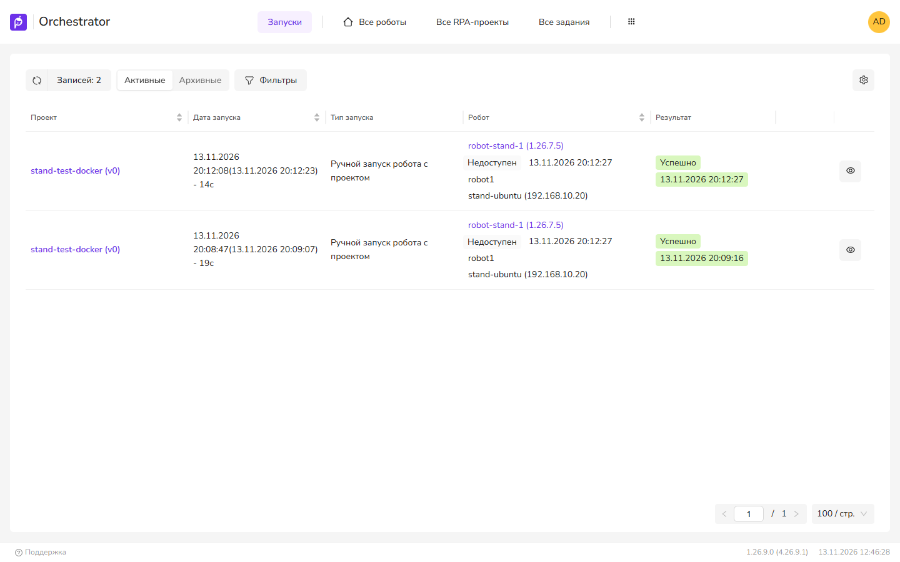

Быстрый старт
Применимо: 1.26.9WindowsLinuxDocker
На странице описан путь от архива RPA-проекта до записи в журнале: загрузка проекта, запуск на роботе вручную, запуск по расписанию и проверка результата. Сценарий подходит для проверки новой установки и для первого знакомства с интерфейсом.
Что должно быть готово
- Лицензии добавлены: Настройки → Лицензии.
- На машине робота установлен агент, машина добавлена в Настройки → Система → Машины роботов, колонка Доступна — «Да».
- Робот добавлен и развернут: в Роботы → Все роботы Статус развертывания — «Готово». Порядок действий — Роботы и машины.
- Архив проекта из Студии — zip-файл с файлами процессов
*.ltwи файлом проекта*.ltp.

1. Загрузите проект
- Откройте RPA-проекты → Все RPA-проекты и нажмите Добавить RPA-проект.
- Загрузите архив в поле Архив (zip). Другие форматы не принимаются: «Загружать можно только zip-архив». Поля формы стали доступны, в списке Главный процесс есть процессы проекта
- Проверьте Главный процесс: автоматически выбирается файл, имя которого начинается с
main., иначе первый в списке. - Заполните Наименование (3–100 символов: буквы, цифры,
@ - _ .; уникально в тенанте) и нажмите Сохранить. Проект появился в списке, у него есть версия
2. Запустите вручную
- Откройте Роботы → Все роботы и в конце строки робота нажмите кнопку запуска ▷ (Запустить робота с проектом).
- В открывшейся форме выберите проект в поле Проект и нажмите Готово. В колонке Состояние робота — «Стартует», затем «Выполняет проект»
Другой способ — запуск через очередь проектов: в RPA-проекты → Все RPA-проекты откройте меню ⋮ в строке проекта и выберите Поместить в очередь проектов. Робот для проекта подбирается по стратегии очереди — см. Очередь проектов. Если стратегия требует привязки, сначала привяжите робота к проекту: Все роботы проекта → Добавить робота к проекту.
3. Настройте задание
- Откройте Задания → Все задания и нажмите Добавить задание.
- Укажите Наименование, Описание и RPA-проект — все три поля обязательны.
- Раскройте блок Запуск по триггеру и нажмите Добавить триггер.
- В поле Тип триггера выберите «Запуск по расписанию», затем укажите существующее расписание (Использовать готовое) или создайте новое (Создать расписание). Поля расписания — Расписания и календарь.
- Нажмите Сохранить. Задание появилось в списке Все задания
- В строке задания нажмите Запустить. В колонке Состояние — «Выполняется», в Следующая дата по расписанию указана дата
4. Проверьте результат
- RPA-проекты → Запуски — история запусков: Тип запуска, Робот, Результат (у успешного запуска — «Успешно»).
- Журналы → Оркестраторные роботы — операции роботов с вложенными событиями и источником: Робот, Оркестратор или Проект.
- Кнопка Журнал в строке робота открывает события только этого робота.
Если робот не запускается, см. Робот не запускается: запуск завис на 50 % или 75 %.